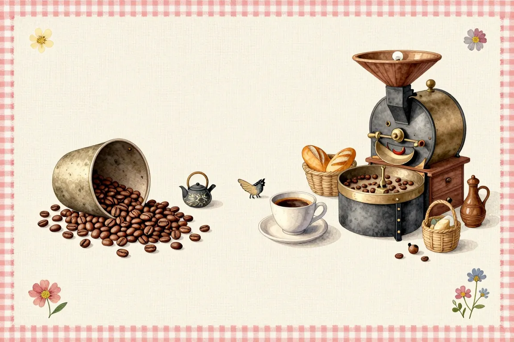

internet · 2018–now · also: Cottage core, Countryside romance
A dream of rural life: wildflowers, baking, linen, embroidery, hand-drawn herbs and soft window light. It grew on Tumblr in 2018 and reached a wide audience on TikTok in 2020.

Core thesis
Pick the slow, handmade country day as a refuge from the feed that carries it.
Design principles
Set the ground in warm cream (#F6EEDC) with a faint linen or paper grain at 5% opacity.
Use sage green (#7D9170), dusty rose (#D9A5A0) and butter yellow (#E8C872) as the three accents.
Pair a soft old-style serif for headings with a clear humanist serif for text; add one script word at 1.5 times the size.
Frame photographs with rounded corners of 16px to 24px, in soft golden-hour light with a lifted shadow.
Place hand-drawn botanicals (a stem, a mushroom, a loaf) at 48px to 120px in the margins.
Show food, flowers and tools laid out by hand: bread on linen, a basket, a jar, a kettle.
Draw borders as 1px dotted or scalloped lines in sage, and keep buttons as soft rounded pills.